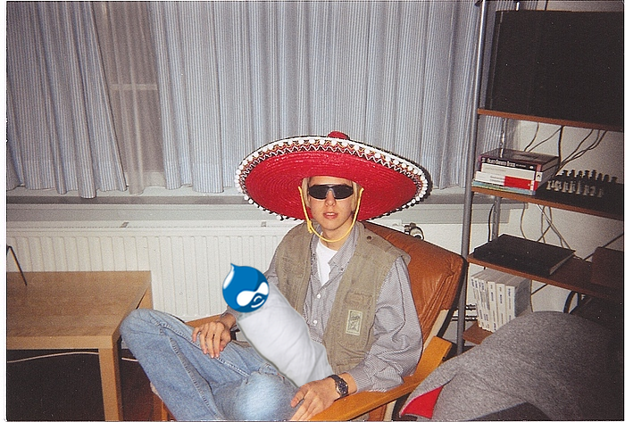
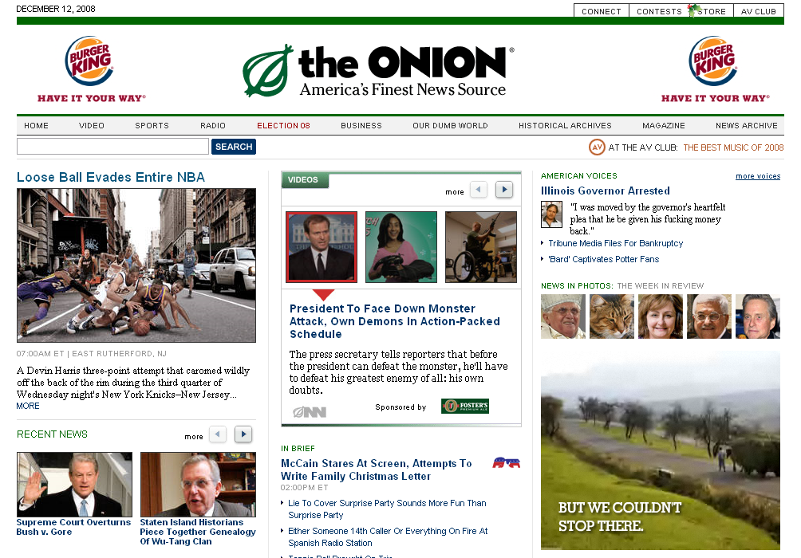
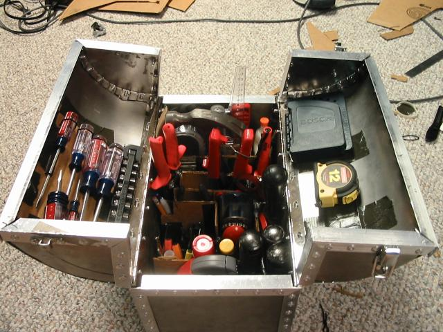
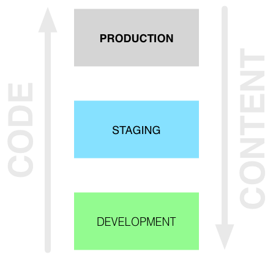
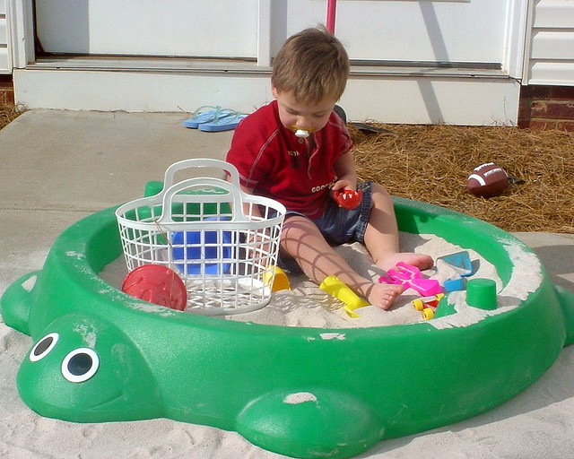
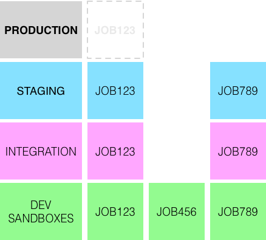

WF Tools FTW
@ Pfizer
Who are we?
- Acquia Technical Consultant
- Drupalist
- Systems Architect
- Large Scale Migration Specialist
- NOT here
Who are we?
- IT Consultant
- Drupalista
- Webapp Hacker
- Sys Admin
- Fat opinionated [alternative to svn]
<ins cite="http://intranet/policies">disclaimer</ins>
Disclaimer
This presentation outlines a general technology direction. Pfizer Inc has no obligation to pursue any approaches outlined in this presentation or to develop or use any functionality mentioned in this presentation. The technology strategy and possible future developments are subject to change and may be changed at any time for any reason without notice.
We'reI'm going to tell you a story.
Once upon a time,
a little boy called Dries lived in Belgium.

While at uni Dries had a little baby called Drupal.
Drupal started to grow.

Like many kids Drupal started doing odd jobs.
While at high school Drupal got a part time job.
Eventually Drupal made it to uni.
After graduating Drupal got a job in the media.
One day a big corporation rang and offered Drupal a job.
Drupal accepted.
On the first day Drupal turned up for work,
and it was clear Drupal didn't quite fit in.
Drupal was used to doing everything on production.
One day the boss called and told Drupal to go buy some new tools.
Drupal started searching for new tools.

The next day Drupal's new tools arrived.
Drupal's boss was impressed.
And they all deployed happily ever after.
What was in the toolbox that made Drupal's boss so happy?
UUID
Deploy
Services
drush
Features
git
Rules
Jenkins
Custom Entities
These tools allowed Drupal to do things very differently.
When Drupal was younger code went up and content came down.
Drupal realized that looking at content on staging was hard.
There was no easy to read log of all changes.
Drupal had difficulty looking at a single change on it's own.
Content and code changes couldn't be bundled together.
Deployment was an all or nothing event.
Deployments couldn't really be tested.
Different permissions and configuration per environment weren't possible.
This all made Drupal very sad.

Drupal decided to change how things were done.

Drupal discovered that arbitrary sets of changes could be bundled together.
Drupal decided to call this a "job".
Now Drupal can group code changes with content changes so both get promoted together.
Drupal can approve the changes in the job each step of the way, and log what's happened.

Drupal gave each job it's own dedicated sandbox.
Drupal can preview content in context.
Drupal can push several jobs to the staging server,
but only push a single job up to production when it's ready.

Drupal tests deployments at every step along the way!
Drupal can create, edit, preview and push content...
all without logging into production.
Drupal has a little cousin.
Drupal's cousin's name is "Job123".
Drupal makes sure job123 is safe on an epic journey.

Job123 started off as nothing more than a twinkle in somebody's eye.
First, Drupal spins up a new dedicated drupal sandbox called job123.dev.site.com.
Next, Drupal creates a job123 git branch and checks it out on the sandbox.
Drupal then creates a job123 deployment plan to track the content changes.
Drupal makes changes to content or code (or both) on the sandbox.
Now job123 is big enough to move to the integration environment.
Drupal merges the job123 git branch into the integration git branch and pushes it to the integration server.
Then Drupal triggers the job123 deployment plan to be pushed to the integration server.
Drupal sits back and looks at the changes merged into the integration server...
...and decides job123 is ready to move to the staging environment.
From there, the same merge/approval happens on staging before being pushed to production.
All of the jobs' statuses are tracked by Drupal.
Drupal can tell at a glance which jobs are in which environments, and which are ready for approval...
…all from a central management console.
This management console is the heart of WF Tools.
Meanwhile, Pfizer heard about what Drupal could do.
At Pfizer Drupal worked hard.
Drupal ran 300+ sites at Pfizer,
Each week brings around 3 new sites.
Pfizer needed Drupal's new toolbox.
Drupal's boss at Pfizer was impressed.
DEMO
The rolling releases model

allows people to go from idea to prod in an afternoon.
And they all deployed happily ever after.
THE END
Questions
Learn more
Connect with Dave
Connect with Tim
Copyright

WFTools FTW @ Pfizer by Dave Hall
and Tim Holtis licensed under a Creative Commons Attribution-NonCommercial-ShareAlike 3.0 Australia License.
Based on a work at wftools.github.io/badcamp-2013-wftools.
Image Credits
- Dave Arrest by Tim Holt
- Book image by Frisno
- Young Dries, by Buytaert Family, altered by Dave Hall
- Dries in dorm, by Dries Buytaert, altered by Dave Hall
- First day at school by play2smee altered by Dave Hall
- Victoria University screenshot, created by Dave Hall
- The Onion screensot, created by Just Skins
- Hipster office worker by malingering, altered by Dave Hall
- Rocket illustration by Crystal Space Community via wikimedia
{kind=link}
{kind=link}